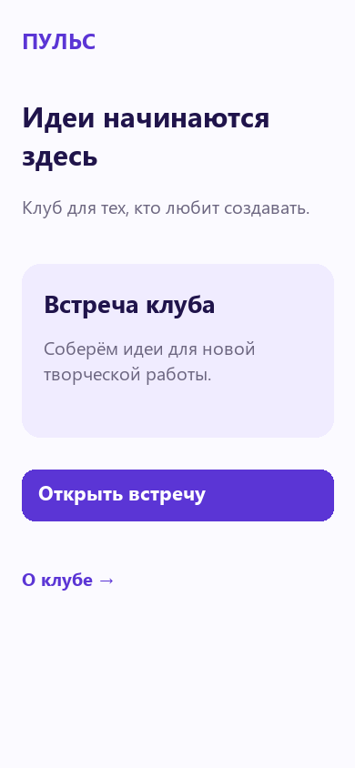
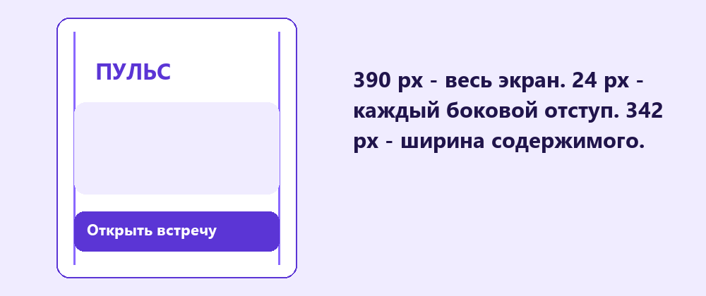

Первый экран приложения
Собери главный экран клуба: покажи, куда попал пользователь, что можно посмотреть и какое действие сделать.
Перейти к заданию ↗
Перед новой практикой
Три небольших вопроса по предыдущему уроку. Выбери ответ и нажми «Проверить».
Клавиши для практики
Сочетания для Windows. Переключи клавиатуру на английскую раскладку. Перед командой заверши ввод текста.
У экрана есть задача
Главный экран должен ответить на три вопроса: что это за клуб, что здесь интересного и куда нажать дальше. Возьми готовые материалы из шаблона: название, карточку встречи и кнопки. Определи одно главное действие - открыть встречу.

Название, приглашение и кнопка помогают быстро понять экран.
Попробуй в Figma
Границы и отступы
Создай Frame 390 × 844 px. Оставь по 24 px слева и справа: доступная ширина содержимого 342 px. Включи Clip content у фрейма. Все элементы экрана должны быть вложены в него в Layers. Сетка из четырёх колонок может помочь выравниванию, но для этой работы достаточно общей линии блоков.

Ширина экрана 390 px, содержимое занимает 342 px между боковыми отступами.
Попробуй в Figma
Понятные действия
Используй знакомые компоненты кнопок и карточки с Auto layout. Подпись кнопки должна объяснять результат: «Открыть встречу» понятнее, чем «Далее» без контекста. Оставь высоту основной кнопки не меньше 48 px. Сейчас собираем внешний вид, переход подключим на следующем уроке.

Одно главное действие заметнее дополнительных ссылок.
Попробуй в Figma
Главный экран клуба
Собери главный экран приложения клуба «Пульс» или своего клуба. В шаблоне есть стартовые компоненты и тексты. Можно продолжить выбранное оформление или взять готовую палитру.
В Figma нажми на название файла и выбери Duplicate to drafts (создать копию в черновиках). Работай в собственной копии. Инструкции и образцы заблокированы.
Проверь свою работу
Отмечай пункты после проверки в Figma.
Если закончил раньше
Добавь вторую карточку встречи с более длинным названием. Сохрани выравнивание и проверь, хватает ли экрану места.